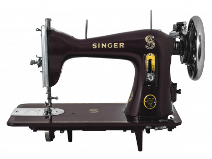
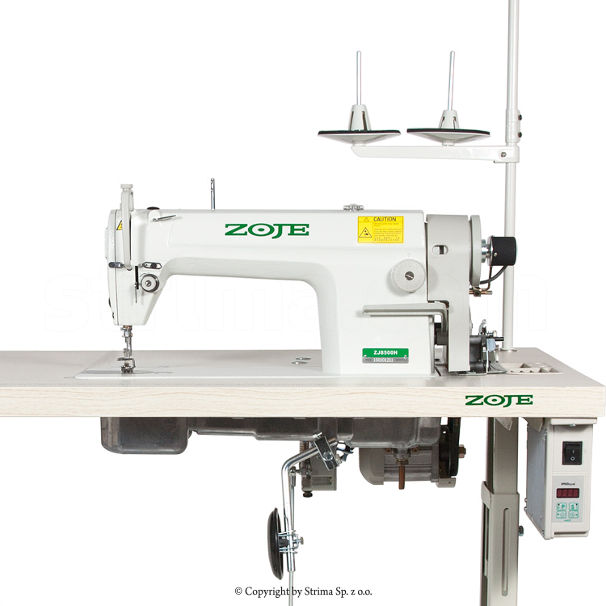
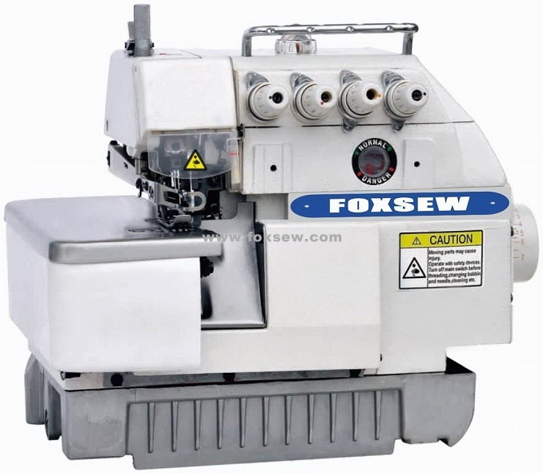

Single Needle
The backbone of many tailoring operations, the Single needle requires precise tuning to perform flawlessly. We specialize in both classic and modern variants, ensuring silent operation and perfect stitching.
Common Repairs & Maintenance
-
Timing and synchronization adjustments
-
Tension unit repair & recalibration
-
Motor brush replacement & lubrication
-
Feed dog height correction

Industrial Machine
Built for heavy-duty production lines, Zoje industrial systems demand robust maintenance. We minimize your downtime through rapid diagnosis and professional heavy-component replacements.
Common Repairs & Maintenance
-
Clutch motor to servo motor upgrades
-
Oil pump and lubrication system clearing
-
Rotary hook timing & replacement
-
Needle bar height and alignment fixes

Overlock
Compact but complex, baby overlockers require a delicate touch. A misaligned looper can ruin your fabric edge. We bring extreme precision to tuning these high-speed machines.
Common Repairs & Maintenance
-
Upper and lower looper timing precision
-
Cutting blade sharpening & replacement
-
Differential feed adjustment
-
Thread tension disc deep cleaning

5 Overlock
The ultimate finishing tool. The 5-thread configuration interlocks safety stitches and overedges simultaneously. Our certified repairs ensure these complex mechanics run in perfect harmony.
Common Repairs & Maintenance
-
Chainstitch looper synchronization
-
Complex multi-thread tension balancing
-
Presser foot alignment and pressure faults
-
Complete internal mechanism degreasing and re-lubrication